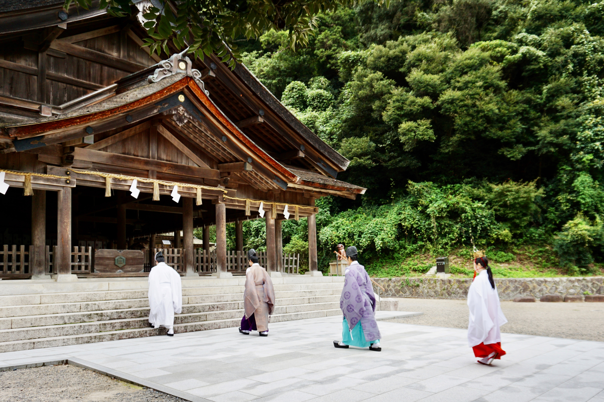
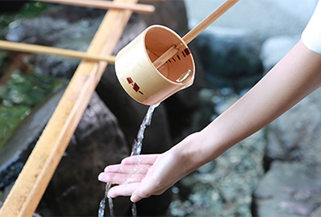
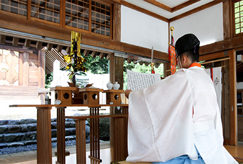

参拝のご案内
本宮 開門時間 6:00～18:00(12/1～4/30）
授与所受付時間 9:00～17:00
年中無休・参拝無料です。
5/1～11/30の開門時間は、6:00～20:00です。
年末年始は特別時間で開門しております。
参拝の作法
手水
右手でひしゃくを持ち、水をすくって左手を洗います。次にひしゃくを左手に持ちかえて右手を洗います。もう一度ひしゃくを右手に持ちかえて左手に水をため、その水で口をすすぎます。ひしゃくを立て柄の部分を水で流し元の場所に戻します。

参拝
神前に進み姿勢を正します。深いお辞儀を2回繰り返します。次に両手を胸の高さで合わせ、右手を少し手前に引き、拍手を二回打ちます。両手を合わせて祈ります。最後にもう一度深いお辞儀をします。

祈祷の作法
基本的に参拝は自由な恰好で構いませんが、社殿の中などの特別な場所で参拝される場合は正装を心掛けてください。男性はネクタイ着用、女性も同等の服装で参拝してください